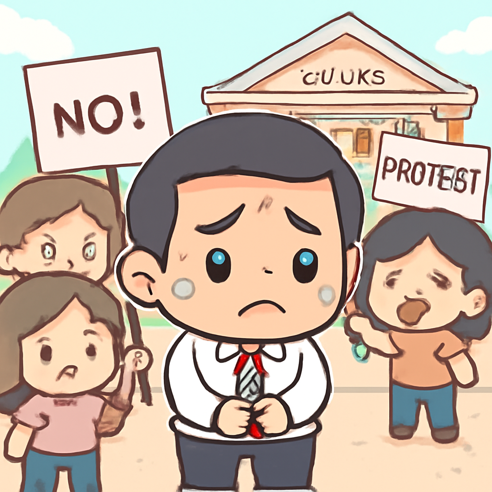

其一 · 伊朗德黑蘭 · 最高領袖葬禮引發關注
伊朗前最高領袖葬禮吸引全球目光。
在德黑蘭，前最高領袖哈梅內伊的葬禮吸引了眾多民眾參加。這場葬禮不僅是對一位領導者的告別，也是對伊朗政局未來的展望。哈梅內伊的去世使得該國面臨政治不確定性，未來的領導者將如何形塑伊朗的命運，值得關注。希望新的領導者能帶來更多的穩定，而非僅僅進一步的混亂。
🔗 原始新聞 ↗
2026-07-06 · 以古觀今，以笑抗愁
伊朗前最高領袖葬禮吸引全球目光。
在德黑蘭，前最高領袖哈梅內伊的葬禮吸引了眾多民眾參加。這場葬禮不僅是對一位領導者的告別，也是對伊朗政局未來的展望。哈梅內伊的去世使得該國面臨政治不確定性，未來的領導者將如何形塑伊朗的命運，值得關注。希望新的領導者能帶來更多的穩定，而非僅僅進一步的混亂。
🔗 原始新聞 ↗
法國極右派領袖馬琳·勒龐的未來備受矚目。
在巴黎，馬琳·勒龐的上訴裁決將影響她能否參加2027年總統選舉。她目前在民調中領先，這次裁決對她的政治生涯至關重要。若她能夠繼續參選，將可能改變法國的政治格局，讓我們拭目以待，看看法國的未來會不會因此變得更加刺激。
🔗 原始新聞 ↗
越南政府積極打擊黑市偽冒奢侈品。
越南當局決定對假冒奢侈品市場展開打擊行動，這是由於美國政府的壓力。這一舉措雖然在當地引發了不同的看法，但無疑會影響到越南的經濟和國際形象。希望這次行動能讓市場更乾淨，也讓消費者不再被假貨欺騙。
🔗 原始新聞 ↗
超級颱風巴維襲擊美國太平洋島嶼。
超級颱風巴維以每小時290公里的風速登陸美國太平洋島嶼，為當地帶來了巨大的破壞。雖然颱風過後，大家可能會想說「天啊，這風太大了」，但更重要的是，政府正在全力以赴地應對這場災難，保障民眾的安全。希望大家能早日恢復正常生活，不再被風捲走。
🔗 原始新聞 ↗
菲律賓副總統薩拉將面對彈劾審判。

在馬尼拉，副總統薩拉·杜特爾即將面臨彈劾審判，這可能使她的政治生涯蒙上陰影。她被控涉嫌腐敗及對現任總統發出死亡威脅。這場審判不僅影響她的未來，也將對菲律賓的政治局勢產生深遠影響，讓我們看看會發生什麼樣的政治風暴。
🔗 原始新聞 ↗